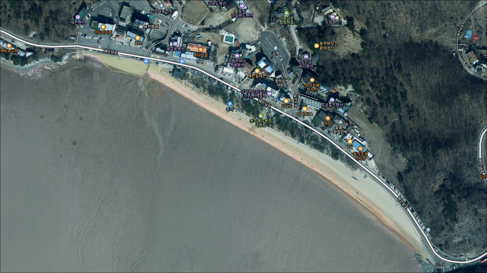
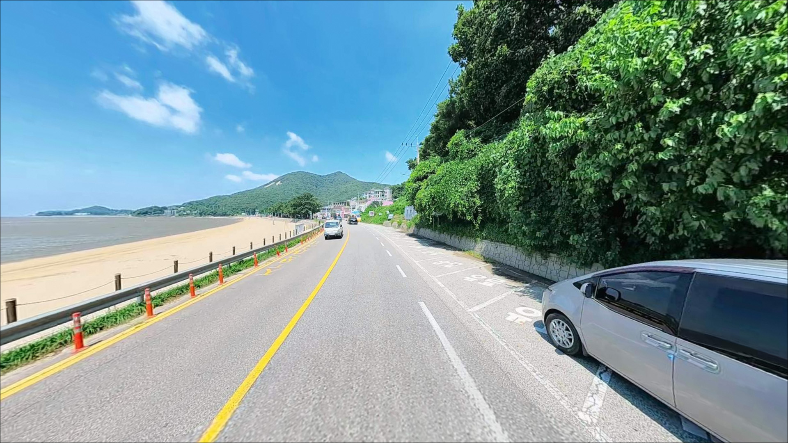
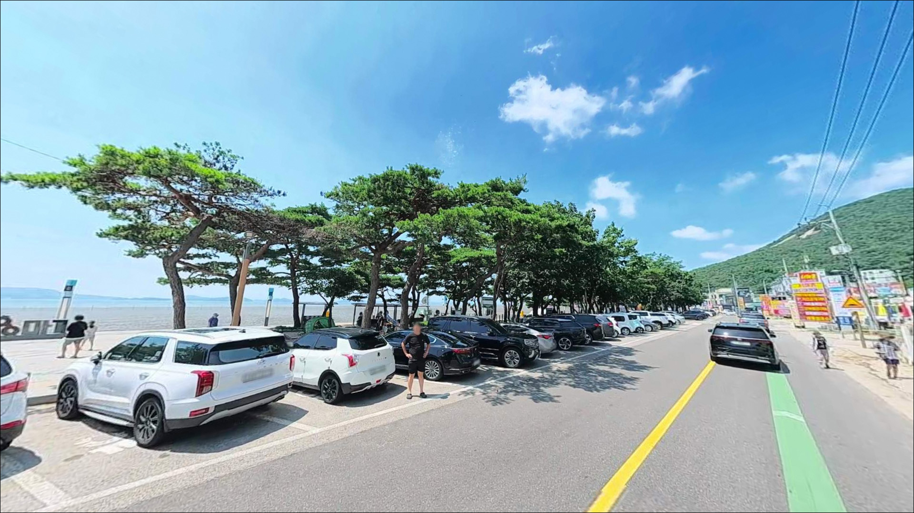
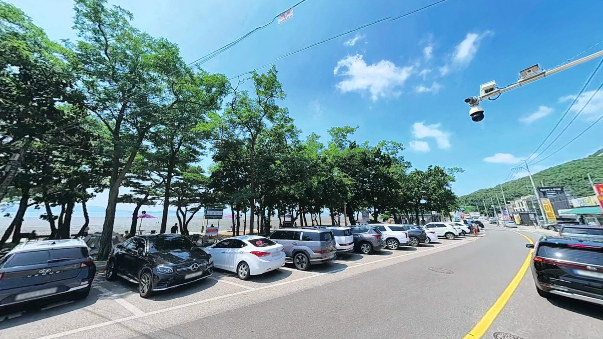
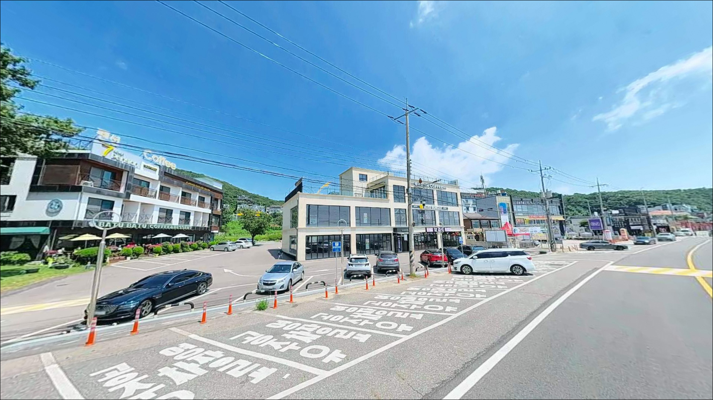
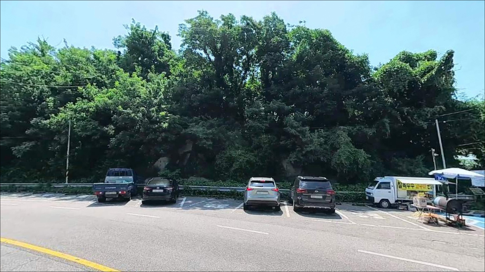
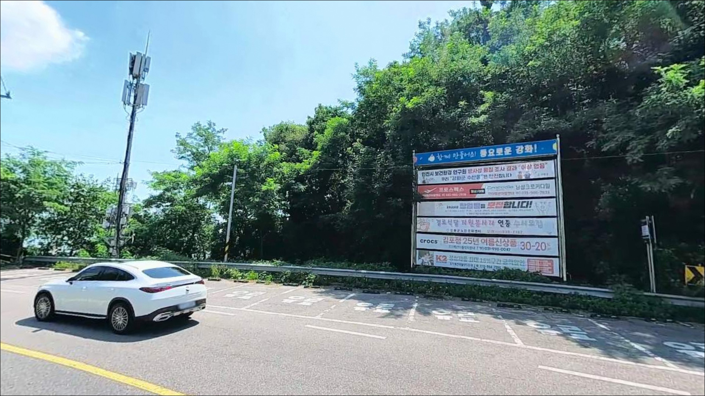
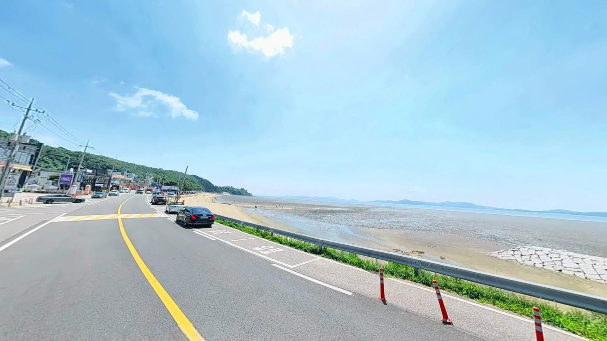
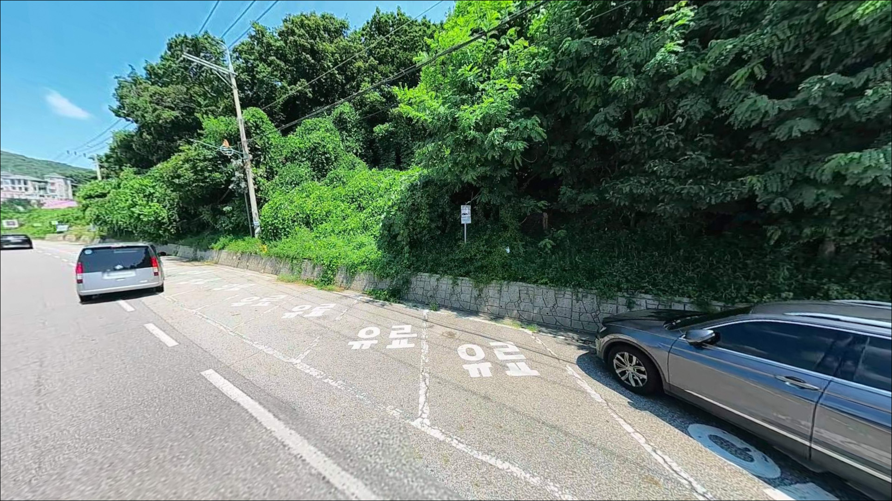

이 페이지에는 광고(제휴 링크 포함)가 있으며, 광고 링크를 통해 구매하면 운영자가 판매 수익 또는 수수료를 받을 수 있습니다. 포인트 사진: 카카오맵 스카이뷰·로드뷰. 이 페이지의 지도·사진 이미지는 카카오맵의 실제 서비스 이미지와 다를 수 있습니다.

동막해수욕장
인천 강화군 화도면 동막리 7-3
동막해수욕장은 물때를 모르고 가면
낚시 자리 자체가 사라지는 포인트입니다.
간조 때 갯벌이 수백 미터씩 드러나는 구조라,
타이밍을 놓치면 어떤 채비도
닿을 물이 없습니다.
이 글은 만조 전후 낚시 접근 방법과
진입·차박 환경을 중심으로 정리했습니다.
강화도 남서단, 화도면 해안남로를 따라
이어지는 동막해수욕장은
세계 5대 갯벌 중 하나로 알려진
강화 갯벌과 접해 있는 서해형 해변입니다.
관광지로서의 인프라가 잘 갖춰져 있어
접근성은 좋지만,
낚시보다 갯벌 체험 목적지로
조성된 성격이 강한 포인트입니다.
이 글은 동막해수욕장의
물때 기반 낚시 조건, 진입 환경,
차박 여건에 집중합니다.
조황 단정이나 특정 어종 보장은
이 글의 범위에 포함되지 않습니다.

동막해수욕장은 해안남로를 따라
직접 연결되는 포장도로가 잘 갖춰져 있어
진입 자체에 큰 어려움이 없습니다.
왕복 2차선 도로가 해변 앞까지 이어지고,
경사나 비포장 구간 없이 접근할 수 있어
대형 차량도 통행에 무리가 없는 구조입니다.
해변 맞은편에 공영 주차장이 마련되어 있으며,
도로변 노상 주차 구역도 함께 이용할 수 있습니다.
주차장 규모가 있어 회차는 가능한 편이지만,
여름 성수기나 주말에는 관광객 집중으로
주차 대기와 혼잡이 발생할 수 있는 편이라
낚시 목적이라면 이른 새벽 진입이 낫습니다.
낚시 자리를 찾는다면 해변 우측,
분오리돈대 방향으로 이동하는 동선이
기본입니다.
석축과 암반 구간이 나타나는 이 방향이
원투낚시와 루어 탐색이 모두 가능한 구간으로,
해변 중앙 백사장보다 낚시 여건이 낫습니다.

동막해수욕장은 강화도에서
차박 관련 후기가 많이 언급되는 편에 속합니다.
해변 뒤편 소나무숲 구간에
야영 구역이 조성되어 있으며,
성수기 한시 운영 방식으로
동막리마을회에서 관리하고 있습니다.
야영 구역 이용을 계획한다면
사전에 운영 기간을 확인하는 것이 먼저입니다.
비수기에는 야영 구역이 닫혀 있을 수 있어,
공영 주차장 기반 단기 체류 방식으로
방문을 준비하는 편이 현실적입니다.
관광지 특성상 가로등과 주변 인원이 있는 환경이라
완전한 프라이빗 분위기를
기대하기는 어렵습니다.
동막해수욕장 인근은 저어새 번식지가 지정되어 있고,
강화 갯벌 천연기념물 구역과 접해 있습니다.
야간 취사나 소음이 제한되는 환경이므로,
야영 구역 외 지정되지 않은 장소에서의
화기 사용과 취사는 현장 안내판 기준을
먼저 확인해야 합니다.

동막해수욕장은 편의시설 면에서
강화도 내에서 잘 갖춰진 편입니다.
해변 바로 앞에 GS25와 CU 편의점이 24시간 운영하며,
식당과 카페도 해변 인근에 형성되어 있어
식수·식재료·낚시 소품 조달이 수월합니다.
화장실은 해변 양쪽에 갖춰져 있어
야간 낚시 중에도 이용이 가능합니다.
반경 10km권에서는 화도터미널 인근 하나로마트와
화도주유소를 이용할 수 있어,
연료 보충이나 마트 이용이 필요할 경우
이 동선을 활용하는 것이 현실적입니다.
응급 상황 발생 시 대형 병원까지
이동 거리가 있으므로
출발 전 비상약품과 구급용품 준비는 기본입니다.
야영구역 운영 여부나 현장 이용 사항이
궁금할 때는
동막리마을회(032-937-4445)에
미리 문의하는 것이 가장 확실합니다.

동막해수욕장 방문 전 가장 먼저 확인할 것은
물때입니다.
서해 특성상 조차가 매우 크고,
간조 시에는 갯벌이 수백 미터 이상 드러나
사실상 낚시가 불가능해집니다.
바다타임에서 강화 화도면 기준 물때를 확인하고,
만조 2~3시간 전 들물 타이밍에 맞춰
입장 시각을 잡는 것이 기본 전략입니다.
강화 갯벌은 천연기념물 구역이 지정되어 있으며,
강화군 공식 안내에서
갯벌 생물 포획을 자제하도록 명시하고 있습니다.
낚시 전에는 현장 안내판을 반드시 먼저 확인하고,
구역별 금지 사항을 파악한 뒤
자리를 잡는 것이 기본 매너입니다.
갯벌 가장자리나 석축 구간에서 낚시할 때는
바닥이 미끄러운 편이라
논슬립 소재의 신발은 필수입니다.
서해 조류 특성상 물이 빠르게 차오를 수 있어
퇴로를 먼저 확인하는 습관이 필요하고,
야간 출조 시 구명조끼와 헤드랜턴은
기본 장비에서 빠질 수 없습니다.

동막해수욕장은 완만한 경사의 갯벌형 해변으로,
수심이 얕고 조차가 큰 전형적인 서해 구조입니다.
간조 시 갯벌이 드러나는 구간에서는
낚시 자리 확보 자체가 불가능해집니다.
조차가 크고 물이 빠르게 움직이는 구간이라
물때를 잘못 잡으면 준비한 채비를 쓸 기회 없이
철수하게 되는 구조입니다.
만조 시에도 수심이 깊지 않은 편이라
원투 채비로 먼 거리를 공략하는 방식이
이 포인트 지형에 맞는 접근입니다.
동막해수욕장은 만조 전후 2~3시간이
원투낚시 가능한 실질적인 타이밍입니다.
해변 우측 분오리돈대 방향으로 이동하면
암반과 석축 구간이 나타납니다.
이 구간은 해변 중앙 백사장보다
발판이 있고 수심이 조금 더 확보되는 편이라,
루어 탐색이나 석축 가장자리를 노리는 방식이
보다 현실적인 낚시 자리가 됩니다.
최신 조황은 가기 전에 꼭 검색해 보시기 바랍니다.

이 포인트에서 가장 기본이 되는 낚시는
원투낚시입니다.
갯벌형 해변 사질대 바닥을 공략하는 방식으로,
만조 2~3시간 전 들물이 시작되는 타이밍부터
채비를 멀리 던지고 입질을 기다리는 패턴이 어울립니다.
서해 갯벌 지형에서 흔히 기대해 볼 수 있는
망둥어·숭어 계열이 이 포인트의 기대 어종이며,
가을 망둥어 시즌에 접근하는 낚시인이 많은 편입니다.
해변 우측 분오리돈대 방향 암반·석축 구간에서는
가벼운 루어 채비로
바닥층 탐색을 시도해 볼 수 있습니다.
발판이 있는 석축 구조라 접근은 수월한 편이며,
만조 전후로 석축 가장자리를 천천히 탐색하는
방식이 이 구간 지형에 맞습니다.
야간 원투낚시도 고려해 볼 수 있는 스타일입니다.
관광객이 빠진 저녁 이후 해변이 조용해지는 시간에
만조 타이밍이 겹치는 날이라면
낮보다 여유 있게 자리를 잡을 수 있습니다.
야간에는 개인 조명 장비를 충분히 갖추고
구명조끼를 착용한 뒤 진입하는 것이 기본입니다.

동막해수욕장에서 물때가 맞지 않거나
관광객이 많아 낚시 자리를 잡기 어려울 때는
도보로 이동 가능한 분오리항이 첫 번째 대안입니다.
동막해수욕장에서 약 500m 거리에 있는
소규모 선착장으로,
발판이 있어 해변보다 낚시 접근이 수월한 편입니다.
강화도 남부로 차로 이동하면
초지항이 있습니다.
강화도에서 낚시 후기가 많이 올라오는 포인트 중 하나로,
방파제 구조물이 있어
원투낚시와 생활낚시를 병행하기 좋은 구조입니다.
동막에서 약 15km 거리이며,
망둥어 시즌 관련 정보가
커뮤니티에 비교적 많이 올라오는 포인트입니다.
광성보 인근 해안로를 따라서도
주차 가능한 구간이 여러 곳 있습니다.
강화대교 방향 해안선을 따라 이동하면서
현장 여건을 보며 자리를 잡는
플랜 B 동선으로 활용할 수 있습니다.

원투낚시 위주로 갯벌 사질대를 공략하거나
석축·암반 구간에서 루어 탐색을 즐기는 낚시인이라면
동막해수욕장이 아주 불리한 환경은 아닙니다.
만조 전후 타이밍만 맞추면
가을 망둥어 시즌을 중심으로
노려볼 수 있는 포인트입니다.
반면 물때 계산 없이 찾아가거나,
성수기 대낮에 조용한 낚시 자리를 기대한다면
관광객과 인파 속에서
낚시 공간을 확보하기 어려운 상황이 됩니다.
물때 확인, 현장 안내판 점검, 진입 시각 조절,
이 세 가지가 동막해수욕장을
낚시 포인트로 제대로 활용하는 조건입니다.
편의시설이 잘 갖춰진 강화 갯벌 해변에서
만조 타이밍에 맞춰 원투 채비를 던지고
솔숲 야영구역에서 하룻밤을 보낸다면,
낚시와 차박을 함께 즐기기에
충분한 조건이 갖춰지는 포인트입니다.